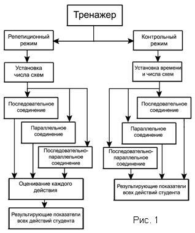
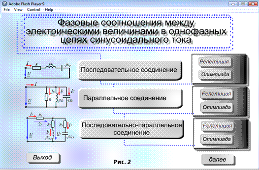
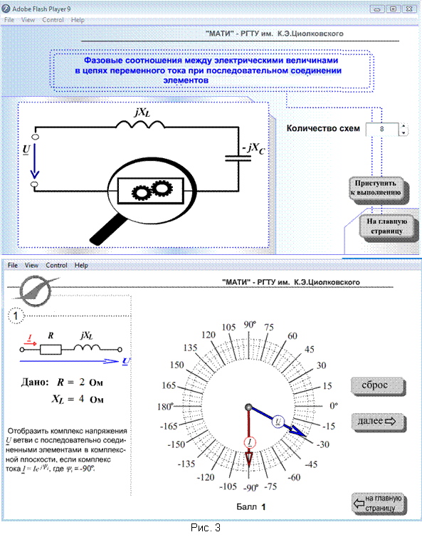
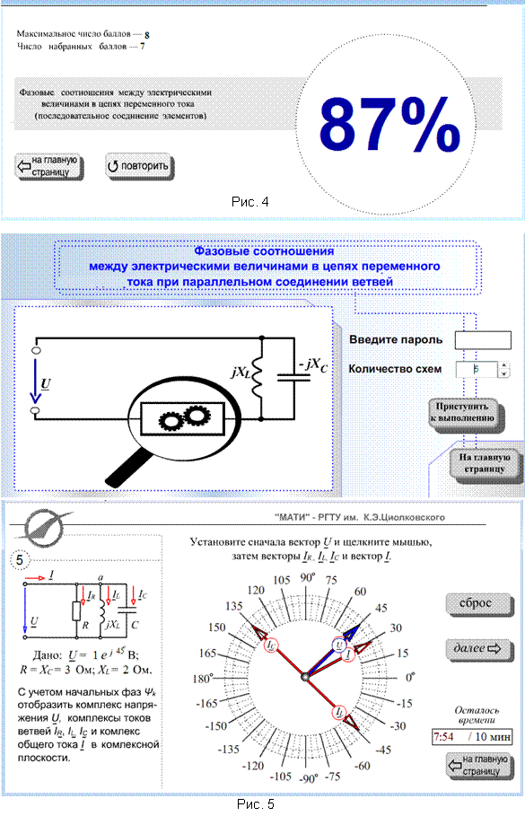
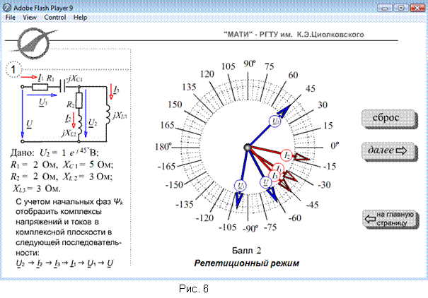
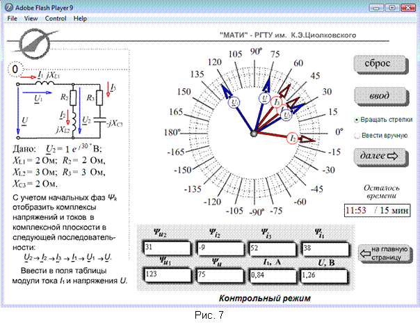

МУЛЬТИМЕДИЙНЫЙ ТРЕНАЖЁР ДЛЯ ПОСТРОЕНИЯ ВЕКТОРНЫХ ДИАГРАММ НАПРЯЖЕНИЙ И ТОКОВ
ОДНОФАЗНЫХ ЦЕПЕЙ ПЕРЕМЕННОГО ТОКА
Марченко А. Л., Сусленкова С. Е., Федотова И. В.
(«МАТИ - РГТУ имени К. Э. Циолковского)» (Свидетельство об отраслевой регистрации электронного ресурса в ИИО РАО РАН № 00031 от 2.06.2009 г. )
Тренажер разработан в программной среде Adobe Flash и предназначен для закрепления сформулированных на лекциях по электротехнике теоретических понятийных образов при изучении темы «Символический метод расчёта однофазных цепей синусоидального тока».
Структурная схема тренажёра для построения векторных диаграмм напряжений и токов однофазных цепей переменного тока при последовательном, параллельном и смешанном соединении элементов представлена на рис. 1.

Тренажёр функционирует в двух режимах: репетиционном и контрольном. В репетиционном режиме оценивается (в баллах) каждое действие студента при установке посредством мыши векторов в комплексной плоскости (рис. 2 и рис. 3), отображающих синусоидально изменяющиеся во времени напряжения и токи электрических цепей, а в контрольном – выводятся результирующие показатели учебных достижений студента (в баллах и в процентах к общему количеству правильных действий) (рис. 4).
|  |
Как числовые значения параметров пассивных элементов, так и начальная фаза нормированного (к единице) напряжения источника энергии выбираются случайным образом из последовательностей заданных целых чисел. При функционировании тренажёра также случайным образом на экран дисплея выводятся схемы цепей, выбираемые из 8 типов. В репетиционном режиме количество схем устанавливается студентом, а при работе в контрольном режиме – организатором олимпиады после введения пароля с установлением общего времени на выполнение заданий (рис. 5).
Прежде чем проводить манипуляции с 
векторами в
комплексной плоскости нужно предварительно найти фазовые углы φk между напряжением и
током во всех ветвях и на входе цепи, а также начальные фазы токов или напряжений
по формулам:
jk = arctg[(XLk - XCk)/Rk], Ψi = Ψu – j или Ψu = Ψi + j,
где Ψi и Ψu – начальные фазы напряжения и тока ветви или на участке цепи.
При вычислении начальной фазы Ψi1 и величины общего тока I1 двух параллельно соединённых ветвей целесообразно вначале рассчитать комплексные про-водимости ветвей
Yk =1/Zk, где ejφk,
затем определить общую проводимость разветвления Y23 = ΣYk и, наконец, комплекс тока I1 = Y23U23 = I1e jΨi1 или I1 = I2 + I3 = U2 / Z2 + U3 / Z3, где U2 = U3.

Общий вид пользовательских интерфейсов тестовых заданий представлен
на рис. 3, рис. 6 и рис. 7. В верхнем левом углу выводится схема цепи со значениями
параметров ее элементов. Ниже – задание или последовательность практических
действий. В правом поле – комплексная плоскость с произвольно размещенными
векторами токов (красного цвета) и напряжений (синего цвета) и управляющие
кнопки Сброс, Ввод, Далее, На главную страницу.
Вращение векторов электрических величин производится мышью: изображение последующего вектора следует за перемещением курсора мыши, введенного в область круга, ограниченного градуированной шкалой. После щелчка левой клавишей мыши вектор фиксируется на выбранном радиусе, начисляется и выводится ниже круга при работе программы в репетиционном режиме (см. рис. 3, внизу и рис. 6, внизу) от 1 до 2,5 баллов при правильном ответе (при отклонении от эталона начальной фазы не более чем на ± 3°) и 0 баллов при неправильном ответе.
С помощью кнопки Сброс (до щелчка мышью на кнопке Ввод или Далее) можно аннулировать предшествующие действия и повторить заново предусмотренные в задании операции.

При выполнении
олимпиадных заданий по определению фазовых соотношений между электрическими
величинами в цепях со смешанным соединением ветвей (рис. 7) предусмотрено два
варианта установки векторов: с помощью мыши (при установке флага Вращать
векторы) и посредством введения значений аргументов (начальных фаз) и
модулей комплексов электрических величин в поля таблицы, расположенной ниже чертежа
комплексной плоскости (при установке флага Ввести вручную).
Использование тренажёра при проведении практических занятий способствует как глубокому осмыслению изучаемых понятий, так и выполнению практических действий – расчётов и построений векторных диаграмм напряжений и токов. Благодаря наглядному интерфейсу, студентам легче ориентироваться в учебном задании и приобретать практические умения и навыки.
Набор мультимедийных тренажёров по основным разделам (темам) курса электротехники может быть использован при проведении сетевых студенческих олимпиад.